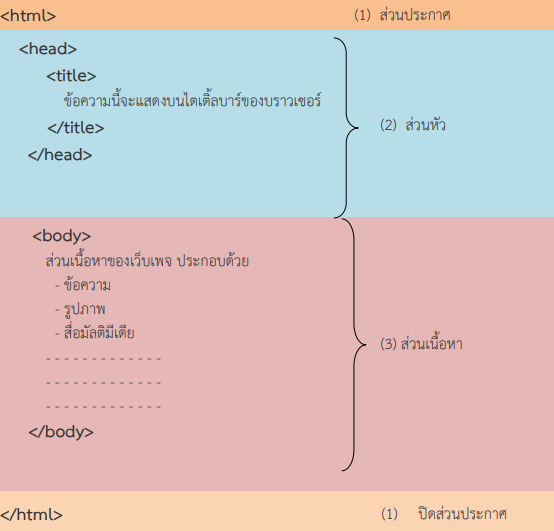

ภาษา HTML คืออะไร?
ภาษา HTML (Hyper Text Markup Language) เป็นภาษาที่ใช้ในการเขียนโปรแกรมข้อมูล ใช้แสดงผลบนเครือข่ายอินเตอร์เน็ตในลักษณะของข้อความ รูปภาพ เสียง และภาพเคลื่อนไหวต่างๆ
ภาษา HTML เป็นภาษาที่ง่ายต่อการเรียนรู้สามารถกาหนดรูปแบบและโครงสร้างได้ง่าย ทำให้ ได้รับความนิยม และมีการพัฒนาอย่างต่อเนื่องเพื่อให้ใช้งานง่ายขึ้น
ในการพัฒนาเว็บเพจในปัจจุบันมีเครื่องมือช่วยอำนวยความสะดวกมากมายแต่ผู้สร้างสามารถใช้เครื่องมือพื้นฐานที่มีอยู่แล้วให้เป็นประโยชน์มากที่สุด โดยไม่ต้องลงทุนอะไรมากมาย เมื่อทำความเข้าใจและเขียนโค๊ดได้ถูกต้องแม่นยำค่อยหาเครื่องมือมาช่วยอำนวย ความสะดวกอีกที
- เครื่องมือเขียนคำสั่ง เราจะใช้ Notepad เป็นหลักเพราะมีเป็นมาตรฐานอยู่แล้วในวินโดว์ทุกเวอร์ชั่น
- เครื่องมือแสดงผล หรือบราวเซอร์นี่ก็มีพร้อมแล้วในวินโดว์ก็เป็น Internet Explorer หรือ Firefox
โครงสร้างหลักของภาษา HTML (Hyper Text Markup Language)

- ส่วนประกาศ เป็นส่วนที่กำหนดให้บราวเซอร์ทราบว่า นี่คือภาษา HTML และจะต้องทำการแปรผลอย่างไรมีคำสั่งคู่เดียวคือ และ ปรากฏที่หัวและท้ายไฟล
- ส่วนหัวเรื่อง (head) เป็นส่วนที่แสดงผลข้อความบนไตเติ้ลบาร์ของบราวเซอร์ และอาจมีค าสั่งสำหรับกำหนดรายละเอียดด้านเทคนิคอื่นๆ อีก แทรกอยู่ระหว่างคำสั่ง และ
- ส่วนเนื้อหา (body) เป็นส่วนที่มีความซับซ้อนมากที่สุด และสามารถใส่เทคนิคลูกเล่นเพื่อดึงดูดความสนใจจากผู้ชมได้มาก ความแตกต่างระหว่างเว็บไซต์ต่างๆ แสดงความมีฝีมือของผู้จัดทำ ศิลปะในการออกแบบจะอยู่ในส่วนนี้ทั้งหมด ซึ่งจะแทรกอยู่ระหว่างคำสั่ง และ